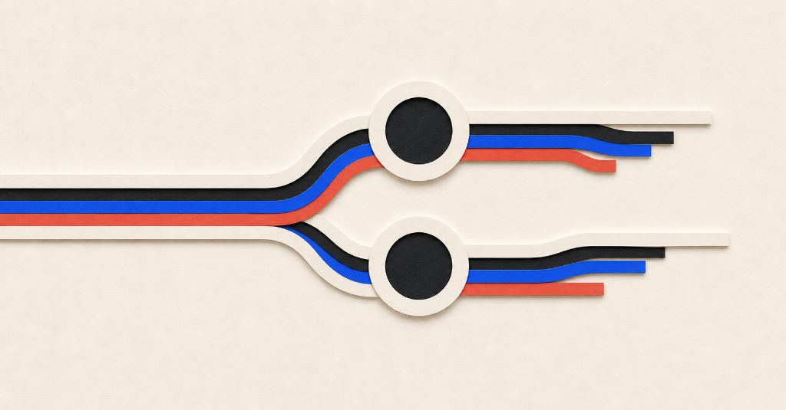
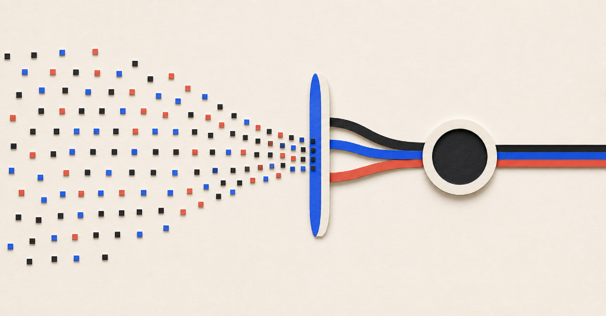

The Next Great Teachers May Be the Workers AI Displaces
I recently watched a remarkable video examining educational trends. In the USA, with similar patterns across much of the Western world, girls and women are outperforming boys and men in institutional education. This structural shift is unprecedented in modern history, and it forces us to re-examine the core mechanics of our educational systems to understand why these imbalances form.
While my own background is rooted in non-institutional, adult, and postgraduate education rather than primary schooling, thinking deeply about these trends leads directly to fundamental questions regarding the future of work and the structural design of schooling itself.
The Economic Paradox of Teaching
There is an old adage that "those who can't do, teach." While often used pejoratively, examining it through an economic lens reveals a deeper systemic truth about societal reward structures. In market economies, individuals receive the highest immediate compensation when they make a clear, direct, and quantifiable contribution to immediate production. Teaching, by contrast, is one of the most complex, long-horizon, and slow-to-impact human endeavours.
The compounded technical, communicational, organizational, and social skills required to be an exceptional educator are almost always rewarded more generously in fields that directly produce immediate output. Consequently, the best coder is incentivized to code, while the individual with the rare combined skill set of a master teacher often ends up running an enterprise. High-quality practical education is delivered only momentarily, ad-hoc, outside traditional institutions, and at high financial barriers—leaving standard institutional education under-resourced.

The AI Paradigm Shift: From Fact Retention to Mental Filtering
As artificial intelligence penetrates the workforce, a profound opportunity emerges to resolve this paradox. Lower and mid-level technical know-how in numerous domains is rapidly depreciating in relative market value. Anyone can now ask an LLM like ChatGPT for an introduction to atomic spin states, brush techniques, or legal frameworks, receive instant synthesis, and locate primary resources independently.
The scarce, high-value asset is no longer raw fact access; it is:
- Mental filtering models: Overcoming information noise to identify genuine signal.
- Strategic curiosity: Knowing what to investigate and why.
- Knowledge synthesis: Securing unique, non-obvious insights and assembling them into actionable frameworks.

At the same time, institutional education faces a chronic shortage of staffing and mentorship capable of guiding students through this higher-order cognitive landscape.
Turn "Those Who Cannot Do" Into "Those Who Teach"
This dynamic creates a powerful economic alignment. As AI tools outperform workers carrying low-to-mid level technical execution roles, we face a growing cohort of highly educated, capable professionals who are being displaced from traditional operational roles—essentially, those who, under new market conditions, "cannot do."
Simultaneously, the economic benefit of becoming a high-level strategic practitioner is increasing, requiring a longer, more deliberate path to mastery. Serving as an educator provides a structured stepping stone along this journey. It allows skilled professionals to be compensated for deepening their domain expertise while performing complex, socially vital work.
Integrating these displaced specialists into education elevates the technical competency of the teaching populace, relieving administrative strain and allowing master pedagogical theorists to pioneer next-generation learning models.
Realigning Education Along Cognitive Processes
To fully capitalize on this shift, education must evolve away from rigid subject silos (e.g., separating biology, chemistry, and physics) and realign around fundamental cognitive processes:
- The Scientific Process: Unifying physical and life sciences around empirical inquiry, hypothesis testing, and truth discovery.
- The Mathematical & Logical Process: Integrating mathematics with logic, rhetoric, and formal reasoning.
- The Communicative Process: Synthesizing literature, art, and drama into tools for expression, empathy, and persuasion.
- The Engineering & Innovative Process: Framing design, problem-solving, and systems thinking as core practical disciplines.
In this restructured model, professional educators act as course designers, pedagogical strategists, and administrators. External domain specialists and displaced technical experts bolster learning sessions with real-world case studies, bridged by AI tools to deliver personalized, high-touch instruction without increasing workload.
By transforming workforce displacement into educational abundance, we can construct an adaptive model suited to the diverse intellectual needs of students, preparing both youth and adults for an AI-native world.
Originally published on LinkedIn — view the original article and discussion on LinkedIn ↗.